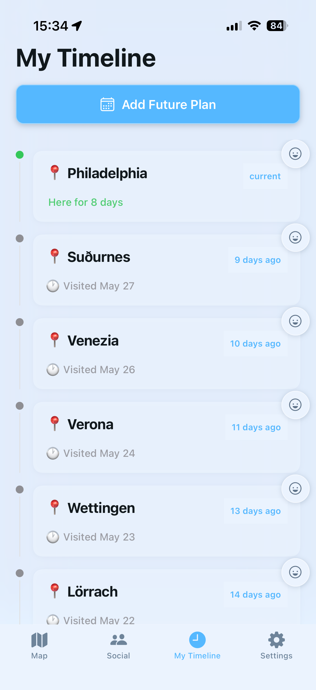
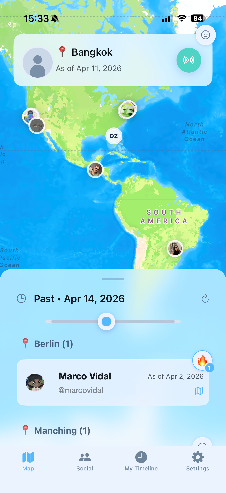
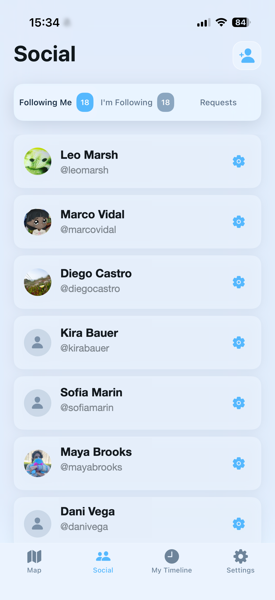

01
City-level, never a street
Your friends see which city you're in — never your exact address. Fine-grained controls let you choose who sees what, without collapsing it into a single on/off switch.
Citylap shares where you are at city level — never an exact pin — so your inner circle always knows who's near, without ever being tracked.


01
Your friends see which city you're in — never your exact address. Fine-grained controls let you choose who sees what, without collapsing it into a single on/off switch.
02
Drag back to see where everyone was, or look ahead at upcoming plans. A living map that makes location feel personal and easy to read across time.
03
End-to-end encryption and our own offline geocoder mean your location never touches a third-party server. Privacy is the default, not a premium toggle.
A closer look
Real app screens showing how Citylap brings your circle together — at city level, with controls that respect everyone's boundaries.
The everyday view — who's where, at city level, right now.
Rewind to yesterday or fast-forward to Friday's plans.

Approve followers and fine-tune visibility person by person.
Why it feels different
Sharing at city level means your friends feel near without anyone — including us — knowing your exact whereabouts. Your data is encrypted end-to-end and geocoded entirely on your device.
The result is connection that feels calm, clear, and actually private.
Available soon